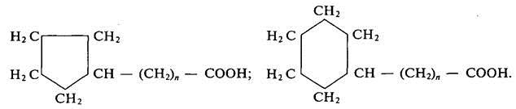
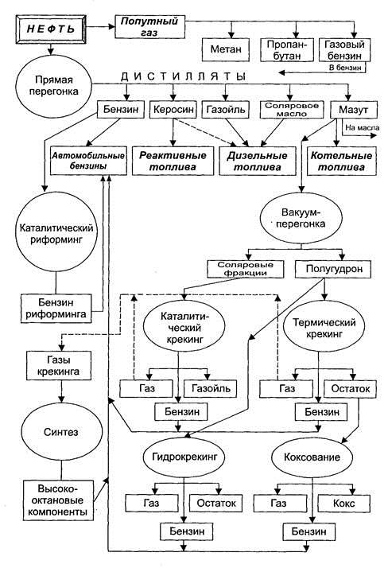

Тема 1
Химический состав
нефти. Методы переработки нефти
Введение
Автомобильные топлива являются источником тепловой
энергии, которая в двигателях внутреннего сгорания преобразуется в
механическую. Топлива делятся на жидкие и газообразные. Жидкие топлива
подразделяются на бензины и дизельные топлива, а газовые — на сжиженные и
сжатые. Основным источником получения жидких и газообразных топлив является
нефть.
В настоящее время, когда во всем мире наблюдается рост
цен на нефтепродукты, становится острой проблема рационального расходования
особенно таких материалов, как топлива и масла.
К эксплуатационным материалам, применяемым на
автомобильном транспорте, относятся жидкие и газообразные топлива, смазочные и
конструкционно-ремонтные материалы, а также специальные жидкости.
Автомобильный транспорт использует значительную часть
производимых продуктов переработки нефти и газа. В себестоимости автомобильных
перевозок затраты на топливо и смазочные материалы составляют более 20 % и
существенно зависят от уровня эксплуатации автотранспортной техники.
Правильный выбор и рациональное использование
эксплуатационных материалов во многом определяют надежность и долговечность
техники, затраты на ее обслуживание и ремонт. Ошибка при выборе моторного масла
может привести в лучшем случае к сокращению срока службы двигателя, в худшем —
к его поломке.
Выбор и правильное применение масла осложняются
зачастую тем, что технической документацией на некоторые машины
предусматривается большое число марок смазочных материалов. Поэтому унификация
их и использование заменителей могут иметь большое значение для упрощения
эксплуатации автомобильной техники.
В автомобиле имеется большое число узлов и механизмов,
где применяются пластичные смазки, разнообразие которых также предполагает грамотное
их использование.
Выбор смазочных материалов более высокого качества,
чем требуется, ведет к неоправданному увеличению затрат. Применение же
материала с более низкими качествами неизбежно приводит к сокращению сроков
службы автомобиля и перерасходу самого материала.
Проблемы использования топлива и смазочных материалов
настолько важны, что возникла наука — химмотология, которая изучает свойства,
качество и рациональное использование горючих и смазочных материалов в технике,
устанавливает требование к горюче-смазочным материалам (ГСМ), что способствует
разработке новых сортов, методов испытаний и унификации ГСМ.
В современном автомобиле число деталей, в конструкции
которых применяется резина, доходит до 500. Поэтому необходимо обладать
знаниями о правильном использовании резинотехнических изделий, особенно
дорогостоящих, таких, как автомобильные шины.
Хорошее лакокрасочное покрытие не только придает
автомобилю красивый внешний вид, но предохраняет его кузов от воздействия
внешней среды и преждевременного разрушения. Постоянное воздействие снега,
дождя, соли, а также песка и мелких камней приводит к старению и постепенному
разрушению покрытия. Продолжительность службы кузова легкового автомобиля
составляет в среднем 6 лет. Грамотная противокоррозионная обработка
современными защитными материалами позволяет продлить этот срок до 12 лет и
более.
В книге для каждого вида материалов, применяемых при
эксплуатации автомобилей, приведены физико-химические свойства и
эксплуатационные качества, а также предъявляемые к ним технико-экономические
требования.
Эти и другие сведения, которые необходимы специалистам
автомобильного транспорта для организации рационального использования
материалов, позволяют решать конкретные задачи использования материалов как
отечественного, так и зарубежного производства.
1.1. Нефть
1.1.1. Химический состав нефти
Нефть представляет собой сложную смесь жидких
органических веществ, в которых растворены различные твердые углеводороды и
смолистые вещества. Главными элементами нефти являются углерод и водород.
Содержание углерода колеблется от 83,5 до 87 %, водорода — от 11,5 до 14 %.
Также в нефти присутствуют сера, кислород и азот — в сумме не более 3 %.
Основными компонентами нефти являются углеводороды,
которые принадлежат к следующим гомологическим рядам:
CnH2n+2 — алканы
(насыщенные углеводороды);
CnH2n — нафтены
(алициклические углеводороды);
CnH2n-6 — арены
(ароматические углеводороды).
Непредельных углеводородов в сырой нефти нет. Кроме
углеводородов в нефти присутствуют кислородные, сернистые и азотистые
соединения.
Кислородные соединения представлены карбоновыми
кислотами, эфирами, фенолами и т. п. Основная их часть сосредоточена в
высококипящих фракциях, начиная с керосиновой. Карбоновые кислоты присутствуют
в нефти, всех топливах и смазочных материалах; больше всего в нефтепродуктах
нафтеновых кислот:

Они представляют собой жидкости, которые могут
корродировать металлы.
Сернистые соединения увеличивают расход топлива,
оказывают вредное воздействие на окружающую среду. Сернистые соединения,
входящие в состав нефти, по фракциям переработки распределены неравномерно. В
нефтяных остатках их содержится до 90 %. Сернистые соединения нефти делятся на
активные и неактивные. К активным, которые взаимодействуют с металлами при
комнатной температуре, относятся элементарная сера, сероводород и меркаптаны.
Неактивные сернистые соединения, к которым относятся
сульфиды и дисульфиды, при нормальных условиях не вступают в реакцию с
металлами.
В малосернистых нефтях содержание сернистых соединений
достигает 0,5 %, а в сернистых до 5 %. После перегонки в бензиновых фракциях
содержится до 0,15 % неактивных сернистых соединений, в керосиновых — до 1 %.
Азотистые соединения содержатся в нефти в небольших
количествах и концентрируются, главным образом, в тяжелых фракциях. Азотистые
соединения делятся на основные и нейтральные. Основные азотистые соединения
отделяют обработкой слабой серной кислотой.
Азотистые соединения термически стабильны и не
оказывают заметного влияния на эксплуатационные свойства нефтепродуктов. Однако
при хранении дизельных топлив они вызывают усиленное смолообразование.
1.1.2. Способы переработки нефти
К основным способам получения топлив из нефти
относятся прямая перегонка (дистилляция), термический и каталитический
крекинги, гидрокрекинг и каталитический риформинг.
При разнообразии содержащихся углеводородов
особенностью нефти является широкий температурный диапазон выкипания. Уже при
нагреве до 30 … 40 °С из нефти начинают испарятся наиболее легкие углеводороды.
С повышением температуры состав выкипающих углеводородов становится тяжелее.
Это позволяет разделить нефть на части или фракции, выкипающие в определенных
температурных пределах. Получаемые продукты называются дистиллятами, а сам
процесс – прямой перегонкой нефти. Обычно выделяются дистилляты со следующими
пределами выкипания:
|
Бензиновый |
28 … 180 °С |
|
Лигроиновый |
110 … 230 °С |
|
Керосиновый |
120 … 315 °С |
|
Газойлевый |
230 … 330 °С |
|
Соляровый |
280 … 380 °С |
|
Масляный |
320 … 500 °С |
Прямая перегонка заключается в нагреве нефти при
атмосферном давлении и выделении фракций, различающихся температурами кипения.
При температуре от 35 до 200 °С отбирают бензиновую фракцию, от 200 до 300 °С
— дизельное
топливо. Остаток после перегонки — мазут (до 80 %), который
поступает в куб дистилляционной колонны, работающей под вакуумом. При этом
верхний слой представляет собой соляровый дистиллят (температура кипения
280—300 °С), который является исходным сырьем для крекинг-бензинов и
дистилляционных масел: индустриальных, цилиндровых, моторных и т. д.
Термический и каталитический крекинги используют для
увеличения выхода легких фракций из нефти. Исходным сырьем служит соляровая
фракция, представляющая собой смесь углеводородов с числом атомов углерода от
16 до 20, при нагревании которой до 450—550 °С в присутствии катализатора
(алюмосиликат) или без него происходит расщепление углеводородов.
Сырьем для термического крекинга является полугудрон —
остаток после недостаточно полного отгона масляных фракций. При этом выход
бензина составляет 30—35 %. Термический крекинг сопровождается образованием
ненасыщенных углеводородов, поэтому бензины термического крекинга
характеризуются низкой химической стабильностью и невысокой детонационной
стойкостью. На современных заводах термический крекинг не применяется.
Основным методом получения бензина является
каталитический крекинг. Бензины каталитического крекинга содержат около 50 %
изоциклических и ароматических углеводородов, а также 20—25 % алициклических.
Содержание ненасыщенных углеводородов не превышает 5—9 %. Поэтому эти бензины
имеют более высокую детонационную стойкость и химическую стабильность.
Каталитический крекинг позволяет получить бензины с
октановым числом до 98 и протекает при температуре 450—550 °С в присутствии
водорода с алюмомолибденовым или алюмоплатиновым катализатором при давлении 3
МПа.
Гидрокрекинг происходит при давлении до 20 МПа и
температуре 480—500 °С в среде водорода с катализатором, благодаря чему
ненасыщенные углеводороды не образуются, и полученный бензин имеет высокую
химическую стабильность. Сырьем служит полугудрон.
Для улучшения качества бензина прямой перегонки
используют каталитический риформинг, который протекает в присутствии водорода
при температуре 460—510 °С и давлении 4 МПа. При этом происходит перестройка
молекул, что ведет к образованию ароматических углеводородов (бензола, толуола,
ксилолов и др.) из алканов и нефтенов и повышению детонационной стойкости.
Коксование тяжелых фракций процессов крекинга
проводится при температуре 550 °С и атмосферном давлении. При этом образуются
кокс, газообразные углеводороды и жидкая фракция, из которой извлекается
бензин.

Рис 1.1. Схема переработки нефти
Синтезирование побочных газообразных продуктов
крекинга и коксования направлено на получение высокооктановых компонентов:
изооктана, алкилата, алкилбензола и других нефтепродуктов, которые используются
в качестве добавок при получении технических сортов бензина.
Очистка автомобильных топлив является заключительной
стадией подготовки базовых продуктов. Их необходимо очистить от избытка
сернистых соединений, органических кислот и смолисто-асфальтеновых веществ. Для
удаления сернистых соединений применяют метод гидроочистки при температуре до
300—430 °С и давлении 5—7 МПа в присутствии катализатора и водорода. Карбоновые
кислоты нейтрализуют щелочью с последующей промывкой водой и сушкой.
Зимние сорта дизельного топлива получают удалением из
жидкой фазы растворенные твердые углеводороды. Этот процесс — депарафинизация
обеспечивает понижение температуры застывания дизельного топлива.
Схема переработки нефти показана на рис. 1.1.
Контрольные вопросы
1. Расскажите о химическом составе нефти.
2. Какое воздействие оказывают сернистые соединения?
3. Назовите основные способы перегонки нефти.
4. Что такое прямая перегонка нефти?
5. Что такое термический и каталитический крекинги?
6. Что такое гидрокрекинг и каталитический риформинг?
P.S.
В
зависимости от места добычи химический состав нефти может меняться, что влечет
за собой и изменение цвета этой горючей жидкости. Нефть может быть и почти
черной, и красно-коричневой, и зеленовато-желтой и даже совсем бесцветной.
Также нефть отличается специфическим запахом. В природе нефть залегает на
глубине от нескольких десятков метров до нескольких километров. Так, на
некоторых скважинах нефть выкачивается с глубины до 2-3 км. Подавляющее
большинство залежей нефти в земле располагается на глубине от 1 до 3 км. Также
нефть может залегать и на малой глубине и даже естественным образом выходить на
поверхность. Правда, в этих случаях под влиянием атмосферного воздуха нефть
превращается в битумы и битумные пески, а также в полутвердый асфальт и
достаточно густую мальту. Далее мы будем говорить главным образом про
химический и физический состав и свойства нефти. Заметим только, что с
асфальтом и естественными горючими газами нефть роднит похожее химическое
строение: все эти вещества в химии называют петролитами. Петролиты — это
горючие вещества биологического происхождения, к которым относятся, в том числе
и многие виды не только жидкого, но и твердого топлива.